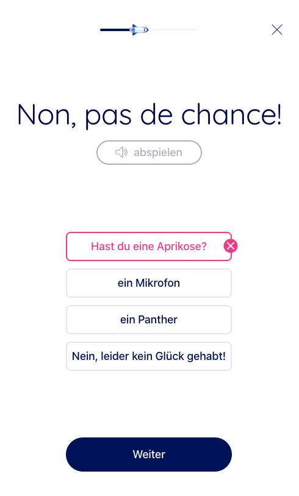

L’application a été développée de manière professionnelle, en étroite collaboration avec des enseignantes et enseignants et la société informatique JLS digital. L’expérience et les besoins des enseignantes et des enseignants concernant l’enseignement du vocabulaire d’une nouvelle langue ont été recueillis auprès de 38 enseignantes et enseignants d’une école du canton du Valais en décembre 2019. L’enquête a révélé que les enseignantes et les enseignants attendent d’une application qu’elle améliore les résultats scolaires et la motivation des élèves. Elles∙ils aimeraient que les élèves soient indépendants dans l’utilisation de l’application, mais qu’ils aient la possibilité d’échanger avec eux sur leurs performances si nécessaire. L’application devrait soutenir les pratiques pédagogiques habituelles et ne pas créer de travail supplémentaire.
L’application met en œuvre des principes d’apprentissage reconnus comme efficaces par la recherche sur la mémoire et la recherche pédagogique appliquée. Toutes ces caractéristiques peuvent être modifiées dans l’application, ce qui nous permet d’ajuster la durée et le calendrier d’apprentissage afin d’optimiser sa réussite.
Vous pouvez avoir un bref aperçu de l’application dans le clip suivant.
Le Prof. Thomas Reber présente l'application stellar-learning.app à la présentatrice Maya Burgener dans l'émission Bijoux.
Pour l'instant, uniquement disponible en langue allemande.
Les principes d'apprentissage
- Le vocabulaire est mieux mémorisé s‘il est appris en plusieurs séances courtes plutôt qu’en une seule longue séance. Cette stratégie reconnue est mise en œuvre au moyen d’unités d’apprentissage courtes et réparties dans le temps. L’application permet de spécifier un régime d’apprentissage distribué en fixant la durée et la fréquence des sessions d’apprentissage et en envoyant des rappels tout au long de la période d’apprentissage.
- L’application intègre un apprentissage par récupération en demandant à plusieurs reprises à l’élève de produire activement une réponse plutôt que de réétudier passivement la liste de vocabulaire. Les réponses peuvent être données par le biais de système à choix multiples, de manière textuelle ou orale. Dans le cas d’une réponse orale, celle-ci est analysée par un programme de reconnaissance du langage pour déterminer si la réponse est correcte.

- Un retour correctif immédiat est donné lorsque l’élève a donné une réponse. Si la réponse est incorrecte, la solution correcte est affichée immédiatement après la mauvaise réponse. L’utilisation de cette stratégie a été démontrée comme très bénéfique pour l’apprentissage.

- L’application s’adresse à de multiples modalités sensorielles - le vocabulaire est présenté par des sons, des images ainsi que sous formes écrite et parlée.